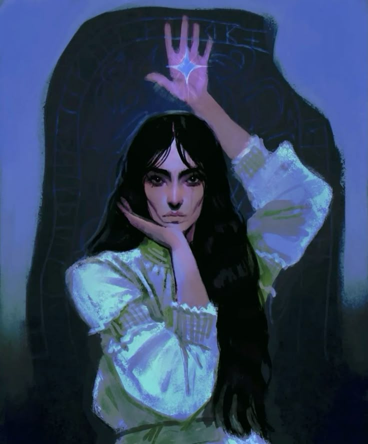

Calliope
Calliope
L'amour n'est guère présent dans un cœur qui bat, mais dans la volonté singulière de continuer d'aimer.
Information connue
Pour ceux qui ont entendu son nom ou lu ses ouvrages, Calliope est une intellectuelle et une Soteriste. Elle fut notamment la Gardienne du Jardin, fonction qu'elle occupa jusqu'en 1922. Son plus grand projet fut de faire connaître les écrits et les paroles de Soteria au reste de la ville, convaincue que cet héritage méritait d'être partagé.
En 1885, elle entra en contact avec Atam, avec qui elle participa à la constitution des archives connues aujourd'hui.
Elle poursuivit ce travail en parallèle de ses fonctions de Gardienne, avant de s'y consacrer pleinement après avoir
laissé sa place à son infante, Maliha.
Depuis, Calliope s'est principalement consacrée à l'étude de l'histoire de Smyrne, du Sabbat et de sa présence
dans la région. Elle est notamment connue pour ses deux ouvrages majeurs, Les Paroles de Soteria et
L'Inferalisme à Smyrne.
Histoire
Étreinte au milieu du XIXe siècle, Calliope passa sa première décennie au Jardin, où elle se consacra à l'étude des textes et de l'héritage de Soteria. Il fallut attendre près de vingt-cinq ans avant de la voir apparaître à la cour, et encore ne s'y montrait-elle que ponctuellement.
Malgré une voix affirmée à travers ses écrits, Calliope a toujours été décrite comme une femme particulièrement timide. Elle acceptait peu de rendez-vous et se montrait discrète sur ses véritables intentions. Son influence s'est ainsi davantage exercée par ses ouvrages et ses recherches que par sa présence dans les salons.
Elle fut Gardienne du Jardin jusqu'en 1922, année où elle céda sa fonction à Maliha. Elle put alors se consacrer davantage aux archives qu'elle avait contribué à établir avec Atam, poursuivant pendant plusieurs décennies l'archivage systématique de toute l'histoire de la ville et des mouvements du Sabbat dans la région.
Ouvrages
Elle est l'autrice de deux ouvrages majeurs : Les Paroles de Soteria et L'Inferalisme à Smyrne.
Le premier rassemble et réécrit les paroles attribuées à Soteria, en reproduit les gravures et établit un catalogue d'une partie conséquente de l'héritage soteriste. L'ouvrage rassemble des textes issus de Toreador de différentes époques et se veut avant tout historique, avec une volonté affichée de neutralité.
Le second ouvrage est beaucoup moins neutre. S'appuyant sur les paroles du prophète, Calliope y retrace certaines
de ses prédictions concernant l'infernalité à Smyrne et porte un regard particulièrement critique sur les événements
ayant marqué la région, notamment depuis l'arrivée de Kushi et durant les mouvements de l'Âge des Ténèbres.
Mais l'ouvrage est surtout controversé pour une autre raison. Calliope y décrit avec une précision inhabituelle
les pratiques liées à la diablerie. Le livre fut rapidement interdit dans les salons publics et sa circulation
fortement limitée.
Le Sabbat et les accusations
Les controverses entourant ses ouvrages finirent par rendre sa présence à Izmir de plus en plus difficile. Officiellement, Calliope quitta la ville en 2005 afin de poursuivre ses recherches et de travailler sur son prochain ouvrage dans les archives de Fès.
La version est suffisamment commode pour être répétée, mais peu nombreux sont ceux qui semblent réellement y croire.
Avec les contacts d'Idia et de Nafissa, Calliope s'installa donc à Fès, où elle poursuit ses recherches dans les archives de l'Ashira.
Relations
Lignée
- Zoé
- Rien dans l'histoire de la ville ne nécessite de parler de Zoé.
-
 Maliha
Maliha
- Sa seule infante et la Gardienne actuelle du Jardin. Les controverses de Calliope ont creusé un fossé entre les deux, qui ne sont désormais plus vues ensemble.
-
 Atam
Atam
- Ils ont fondé les archives ensemble et, avant l'arrivée de Nebetta, elle était la seule personne qui pouvait tenter de deviner où il se trouvait.
-

Eylem - Elles entretiennent une relation, et les rumeurs sur les savoirs qu'elles partagent vont bon train. Malgré son départ, leur correspondance reste un secret mal gardé.
- Ahmet
- Ils se sont croisés quelque part en dehors d'Izmir, alors qu'elle cherchait Kushi. Ils se parlent peu entre les murs de la ville, mais cherchent la trace de l'autre lorsqu'ils voyagent.
Trivia
- Kushi ne semble pas lui porter rancune malgré ses textes ; on raconte même qu'il les apprécie.
- Elle n'a pas spécialement la main verte et a dû laisser le Jardin à Maliha pour qu'il soit restauré après les incendies.
- Elle fut un temps employée par Ibrahim Pacha pour imiter la graphie d'autres descendants, mais la supercherie fut découverte.